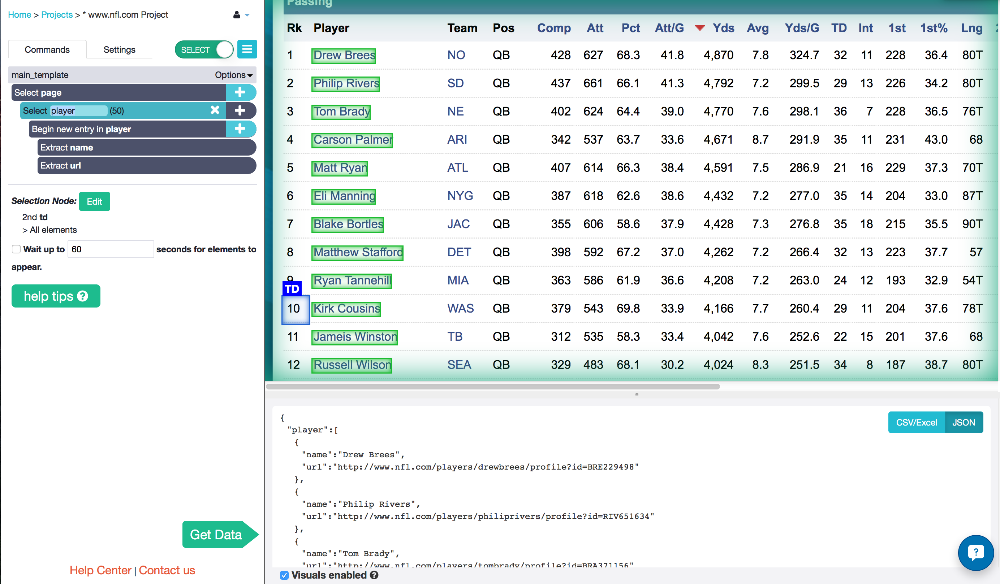
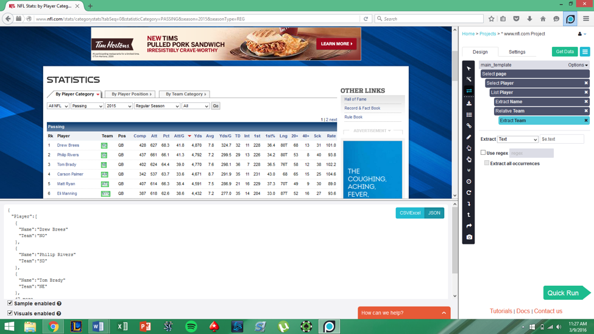
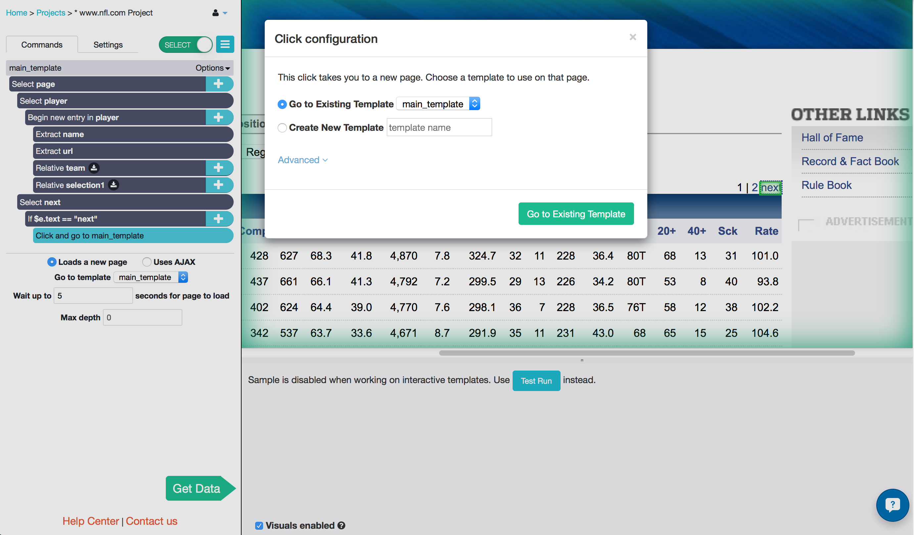
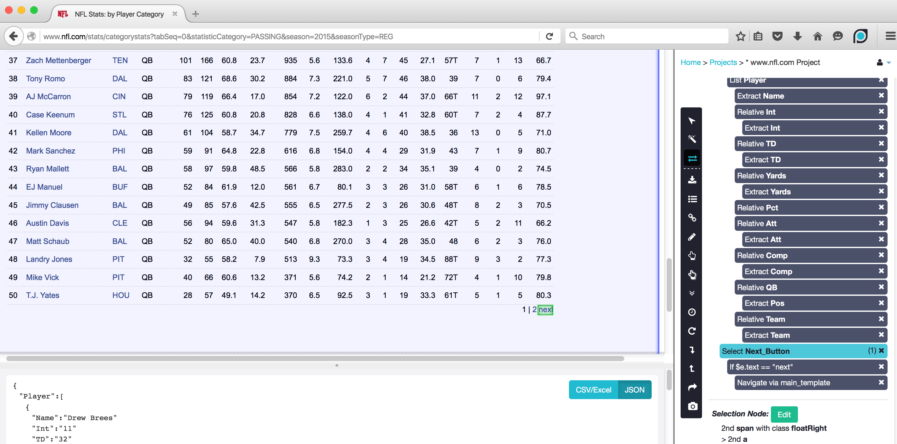
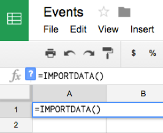
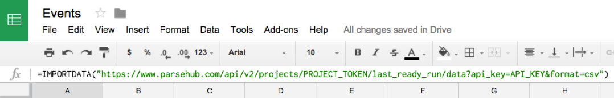

ParseHub is a powerful web scraping tool for extracting all sorts of data from your favorite sites. If you’re a fantasy nerd like me, it can be extremely useful in giving you a leg up on your competition! By sorting players by certain stats, you can find hidden gems for bargain prices, especially in later rounds of the draft. Think Moneyball for fantasy sports! In this tutorial, I will demonstrate how to use ParseHub to extract stats on every quarterback in the NFL from the NFL website.
In this tutorial I will show you how to:
- Scrape data from a sports stats websites.
- Import the data into a Google Doc - for reference and to share with friends
Step 1: Use ParseHub to scrape data from a sports database

1. Collect the players names
- Go to the landing page for NFL quarterback stats.
- Using the Select tool, select the first player name on the list by clicking on it.
- Click on another player name and they will all be selected and extracted for you.
- Rename this selection player.
Now for the fun part. For every player name that you’ve extracted, you want to create a relative selection to their stats, and extract them as well. Say, for example, you want to know the team that the QB is on, their number of completed and attempted passes, total yards, touchdowns, and interceptions thrown. You can collect all of that data by following the steps below.

2. Collect the team names
- Click on the “plus" button next to the "Begin new entry in player" command.
- Add the relative select command to create a link between the player name, and their team name. Click on the player name and click on the team name. All of the team names should be selected for you - with an arrow pointing from the player names to the team names on the entire page.
- Name this selection team. The name and url will be extracted for you.
Now you can just repeat steps 1 to 5 in the "Collect the team names" section for each stat that you want. I will show you how to do one more, and grab the interception stats for each QB.
- Click on the “plus" button next to the "Begin new entry in player" command and add the relative select command again.
- Click on the player name and click on the number of interceptions that they have. Now all of them will be selected.
- Name this selection int.
Here’s a sample of the data that I collected by repeating the above steps for team, interceptions, yards, attempts, completions, and touchdowns.

This selects only the first page of players, however. Once you’ve created the relative selections for the stats you want, you’ll need to take one final step to get ParseHub to go through all the pages of QB’s using pagination.
Step 2: Scrape stats from all of the pages

- Click on the "plus" button next to the "Select page" command.
- Add a Select command and click on the "Next" button on the top right corner of the table.
- Name this selection next.
- Create a Conditional command to ensure that the selected link is actually the "next" button. Enter $e.text == "next".
Note: This is not usually required; the NFL's website just works differently than most. Usually, you would just select the “next” button, and use the Click tool to go to the next page. - Open the command menu by clicking on the "plus" button next to the Conditional command, and add a Click command.
- ParseHub naturally navigates by “clicking”, which is what we want. Choose to Go to Existing Template main_template. This is because you want ParseHub to do the exact same thing that we instructed it to do on this page on the other pages.
3. Run your project and download your data
- Click on the "Get Data" button
- Click on the "Run" button
- Click on the "Save and Run" button
- Wait for ParseHub to extract all of the data from the page
- When you see "CSV" or "JSON" appear under the "Actions" heading - click to download your data.
- You will also get an email when your project is finished scraping data. There will be a link to your data.
And there! You’re all done. Run your project, extract your data, and you’ll have all the stats you want at
your fingertips.
Step 2: Set up the ParseHub API in Google Sheets
To upload your own data into a Google Doc instead of downloading data in Excel from the ParseHub extension just one time, use the IMPORTDATA function to import the data into Google Sheets.
Every time the project runs and scrapes the website, this Google Sheet will be uploaded with new data. You can also schedule ParseHub to run and grab your data consistently. When ParseHub scrapes data on a schedule, the data in your Google Doc will also be refreshed.
1. Find your API key and project token:
- Open the project we just worked on
- Find your project token in the "Settings" tab of the project
- Save the project to see your Project Token.
- Find your API key by click on the "profile" icon in the top-right corner of the app.
Click "Account" and you will see your API key listed
2. Open Google Sheets and create your IMPORTDATA function
- Open a new Google Sheet

- Click on the A1 cell and type in =IMPORTDATA()
- In the =IMPORTDATA() function create your url like the following:
=IMPORTDATA("https://www.parsehub.com/api/v2/projects/PROJECTTOKEN/lastreadyrun/data?apikey=API_KEY&format=csv")
- Replace the PROJECT_TOKEN with the actual project token from the "Settings" tab of your project.
- Replace the API_KEY with the API key from your account.

We created this url based on the ParseHub API reference. Take a look at it for more information.
If you did everything correctly, you should see the data from your project appear almost immediately.
ParseHub can handle much more complex projects and larger data sets, and you can set up any kind
of project you want using this or similar methods. Good luck and happy Fantasy-ing!